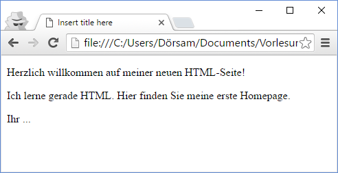
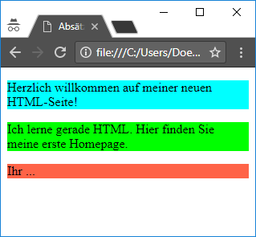

Erstellen Sie die Seite aus der Abbildung mit HTML mit Hilfe von Absatz-Elementen. Ersetzen Sie die drei Punkte durch Ihren Namen. Betrachten Sie Ihre Seite im Browser. Verändern Sie auch die Breite des Browserfensters. Wie ändert sich der Zeilenumbruch in Ihren Absätzen?

Sie können mit einem style-Attribut den Hintegrund der HTML-Elemente einfärben:
<p style="background:red"></p>gree,blackusw. benutzen.
Eine vollständige Auflistung der Farbnamen finden Sie z.B. hier:
Färben Sie Ihre Absätze in drei verschiedenen Farben ein. Sieht Ihre Seite wie in der Abbildung aus? Vergrößeren und verkleinern Sie Ihr Browser-Fenster. Was ändert sich bei Ihren Absätzen? Was schliessen Sie daraus für die Breite und Höhe von Absätzen in HTML-Seiten?
Erstellen Sie mit Hilfe von Listen- und Hervorhebungselementen die HTML-Seite aus der Abbildung.
Positionieren Sie 2 Elemente so zueinander, dass dass Kind-Element horizontal und vertikal zentriert zu dem Eltern Element positioniert ist. Beide Elemente sollen dabei die CSS-Regel
position: relative